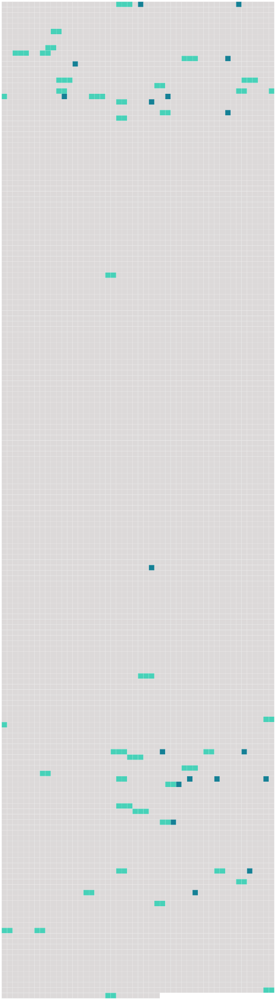

Longueur nb maillons : 56 mentions |
|
Ces publications, et l'acte qui en sera dressé, énonceront les prénoms, noms, professions et domiciles, [des futurs époux] , [leur] qualité de majeurs ou de mineurs, et les prénoms, noms, professions et domiciles de [leurs] pères et mères. [7 phrases]
Les actes d'opposition au mariage seront signés sur l'original et sur la copie par les opposans ou par leurs fondés de procuration spéciale et authentique ; ils seront signifiés, avec la copie, de la procuration à la personne ou au domicile [des parties] et à l'officier de l'état civil, qui mettra son visa sur l'original. [5 phrases]
S'il n'y a point d'opposition, il en sera fait mention dans l'acte de mariage ; et si les publications ont été faites dans plusieurs communes, [les parties] remettront un certificat délivré par l'officier de l'état civil de chaque commune, constatant qu'il n'existe point d'opposition. [1 phrases] L'officier de l'état civil se fera remettre l'acte de naissance de chacun [des futurs époux]
Celui [des époux] qui serait dans l'impossibilité de se le procurer, pourra le suppléer en rapportant un acte de notoriété délivré par le juge de paix du lieu de sa naissance, ou par celui de son domicile. [1 phrases] L'acte de notoriété contiendra la déclaration faite par sept témoins de l'un ou de l'autre sexe, parens ou non parens, des prénoms, nom, profession et domicile [du futur époux] , et de ceux de [ses] père et mère, s'ils sont connus ; le lieu, et, autant que possible, l'époque de [sa] naissance, et les causes qui empêchent d'en rapporter l'acte. [5 phrases]
L'acte authentique du consentement dès pères et mères ou aïeuls et aïeules, ou, à leur défaut, celui de la famille, contiendra les prénoms, noms, professions et domiciles [du futur époux] et de tous ceux qui auront concouru à l'acte, ainsi que leur degré de parenté. [1 phrases] Le mariage sera célébré dans la commune où l'un [des deux époux] aura son domicile. [2 phrases] Le jour désigné par [les parties] après les délais des publications, l'officier de l'état civil, dans la maison commune, en présence de quatre témoins parens ou non parens, fera lecture [aux parties] , des pièces ci-dessus mentionnées, relatives à leur état et aux formalités du mariage et du chapitre VI du titre du Mariage, sur les Droits et les Devoirs respectifs [des époux]
Il recevra de [chaque partie] , l'une après l'autre, la déclaration qu' [elles] veulent se prendre pour [mari et femme] ; il prononcera, au nom de la loi, qu' [elles] son unies par le mariage, et il en dressera acte sur-le-champ. [2 phrases]
Les prénoms, noms, professions, âge, lieux de naissance et domiciles [des époux] ;
S' [ils] sont majeurs ou mineurs ; [5 phrases]
La déclaration [des contractans] de se prendre pour époux, et le prononcé de [leur] union par l'officier public ;
Les prénoms, noms, âge professions et domiciles des témoins, et leur déclaration s'ils sont parens ou alliés [des parties] , de quel côté et à quel degré. [49 phrases]
Immédiatement après l'inscription sur le registre, de l'acte de célébration du mariage l'officier chargé de la tenue du registre en enverra une expédition à l'officier de l'état civil du dernier domicile [des époux] [142 phrases]
Le fils qui n'a pas atteint l'âge de vingt-cinq ans accomplis, la fille qui n'a pas atteint l'âge de vingt-un ans accomplis, ne peuvent contracter mariage sans le consentement de [leurs] père et mère : en cas de dissentiment, le consentement du père suffit. [39 phrases]
Le mariage sera célébré publiquement, devant l'officier civil du domicile de l'une [des deux parties] [21 phrases]
Lorsque l'opposition est fondée sur l'état de démence [du futur époux] : cette opposition, dont le tribunal pourra prononcer main-levée pure et simple, ne sera jamais reçue qu'à la charge, par l'opposant, de provoquer l'interdiction, et d'y faire statuer dans le délai qui sera fixé par le jugement. [13 phrases]
Le mariage qui a été contracté sans le consentement libre [des deux époux] , ou de l'un d' [eux] , ne peut être attaqué que par [les époux] , ou par celui des [deux] dont le consentement n'a pas été libre.
Lorsqu'il y a eu erreur dans la personne, le mariage ne peut être attaqué que par celui [des deux époux] qui a été induit en erreur. [3 phrases]
Le mariage contracté sans le consentement des père et mère, des ascendans, ou du conseil de famille, dans les cas où ce consentement était nécessaire, ne peut être attaqué que par ceux dont le consentement était requis, ou par celui [des deux époux] qui avait besoin de ce consentement. [1 phrases] L'action en nullité ne peut plus être intentée ni par [les époux] , ni par les parens dont le consentement était requis, toutes les fois que le mariage a été approuvé expressément ou tacitement par ceux dont le consentement était nécessaire, ou lorsqu'il s'est écoulé une année sans réclamation de leur part, depuis qu'ils ont eu connaissance du mariage.
Elle ne peut être intentée non plus par [l'époux] , lorsqu'il s'est écoulé une année sans réclamation de [sa] part, depuis qu' [il] a atteint l'âge compétent pour consentir par [lui-même] au mariage. [1 phrases]
Tout mariage contracté en contravention aux dispositions contenues aux articles 144, 147, 161, 162 et 163, peut être attaqué soit par [les époux] [eux-mêmes] , soit par tous ceux qui y ont intérêt, soit par le ministère public. [7 phrases]
Dans tous les cas où, conformément à l'article 184, l'action en nullité peut être intentée par tous ceux qui y ont un intérêt, elle ne peut l'être par les parens collatéraux, ou par les enfans nés d'un autre mariage, du vivant [des deux époux] , mais seulement lorsqu'ils y ont un intérêt né et actuel. [3 phrases]
Si [les nouveaux époux] opposent la nullité du premier mariage, la validité ou la nullité de ce mariage doit être jugée préalablement. [3 phrases]
Tout mariage qui n'a point été contracté publiquement, et qui n'a point été célébré devant l'officier public compétent, peut être attaqué par [les époux] [eux-mêmes] , par les père et mère, par les ascendans, et par tous ceux qui y ont un intérêt né et actuel, ainsi que par le ministère public. [13 phrases]
Lorsque la preuve d'une célébration légale du mariage se trouve acquise par le résultat d'une procédure criminelle, l'inscription du jugement sur les registres de l'état civil assure au mariage, à compter du jour de sa célébration, tous les effets civils, tant à l'égard [des époux] , qu'à l'égard des enfans issus de ce mariage. [1 phrases]
Si [les époux] ou l'un d' [eux] sont décédés sans avoir découvert la fraude, l'action criminelle peut être intentée par tous ceux qui ont intérêt de faire déclarer le mariage valable, et par le commissaire du Gouvernement. [3 phrases]
Le mariage qui a été déclaré nul, produit néanmoins les effets civils, tant à l'égard [des époux] qu'à l'égard des enfans, lorsqu'il a été contracté de bonne foi. [5 phrases]
[Les époux] contractent ensemble, par le fait seul du mariage, l'obligation de nourrir, entretenir et élever [leurs] enfans. [7 phrases]
lorsque celui [des époux] qui produisait l'affinité, et les enfans issus de son union avec l'autre époux, sont décédés. [11 phrases]
Des droits et des devoirs respectifs [des époux] [1 phrases]
[Les époux] se doivent mutuellement fidélité, secours, assistance. [33 phrases]
Par la mort de l'un [des époux] ; [1 phrases]
Par la condamnation devenue définitive de l'un [des époux] , à une peine emportant mort civile. |
 |
Il est possible de télécharger la ressource sur la page Ortolang |
Si vous avez des questions ou vous voyez des erreurs, merci d'envoyer un mail à silvia.federzoni89@gmail.com |